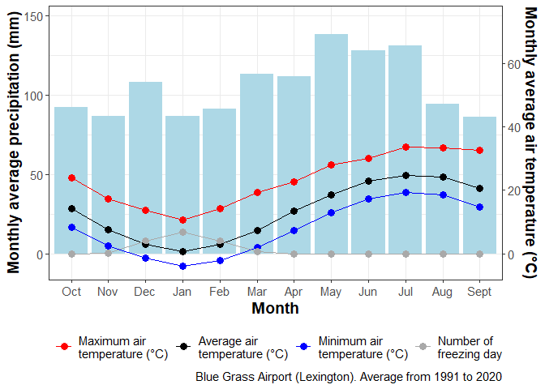

The goal of weatheR is to provide functions that help analyzing and visualizing weather and climatic data.
-
cfunctions are for climate. -
efunctions are for ETP. -
rfunctions are for radiation. -
tfunctions are for temperature. -
zfunctions are tools.
Installation
# install.packages("devtools")
devtools::install_github("vasseurbenoit/weatheR")Example
This is a basic example which shows you how to solve a common problem:
# Library
library(weatheR)
# ETP
e_evapotranspiration_fao56(altitude = 30,
R_inc = 5,
T_air_moy = 20,
T_air_min = 10,
T_air_max = 30)
#> [1] 3.56085
# Radiation
r_radiation_inc_fao56(longitude = 10,
latitude = 35,
altitude = 30,
date = "2022-11-04",
T_air_min = 5,
T_air_max = 15)
#> [1] 4.494582
# Temperature
t_growing_degree_days(T_air_avg = 15,
T_base = 5,
T_opt = 10,
T_max = 20,
method = "C")
#> $rate_of_development
#> [1] 0.5
#>
#> $growing_degree_days
#> [1] 7.5
# Climate
c_ombrothermic_diagram(data = weather_blue_grass_airport,
year_start = 1991,
year_end = 2020,
source = "Blue Grass Airport (Lexington)")
#> $table
#> # A tibble: 48 × 4
#> month rain variable value
#> <ord> <dbl> <chr> <dbl>
#> 1 Jan 86.6 "Average air\ntemperature (°C)" 0.7
#> 2 Jan 86.6 "Minimum air\ntemperature (°C)" -3.8
#> 3 Jan 86.6 "Maximum air\ntemperature (°C)" 10.6
#> 4 Jan 86.6 "Number of\nfreezing day" 6.7
#> 5 Feb 91.2 "Average air\ntemperature (°C)" 2.9
#> 6 Feb 91.2 "Minimum air\ntemperature (°C)" -2.1
#> 7 Feb 91.2 "Maximum air\ntemperature (°C)" 14.1
#> 8 Feb 91.2 "Number of\nfreezing day" 3.9
#> 9 Mar 113. "Average air\ntemperature (°C)" 7.4
#> 10 Mar 113. "Minimum air\ntemperature (°C)" 2
#> # ℹ 38 more rows
#>
#> $diagram

Ombrothermic diagram of Lexington Blue Grass Airport.